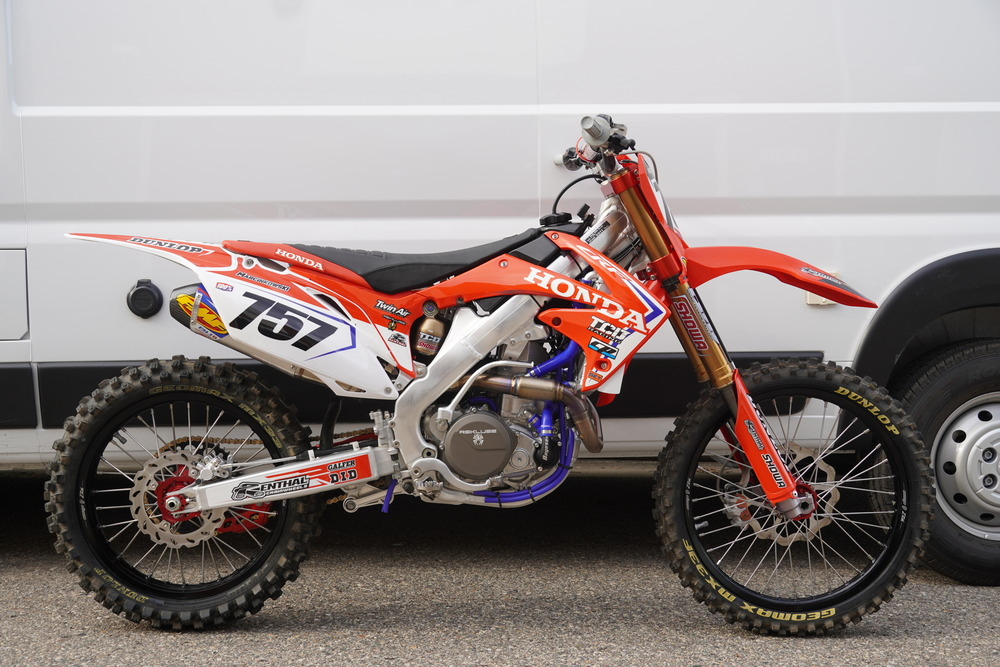

Hello, my name is Philip Marcinkowski. I am attending MIT for the Professional Certificate in Coding for a Full Stack Development with MERN. I have always been interested in coding and with my current job, it has become big part of my role. In my current role, I mainly code in VBA, but I am looking to expand my knowledge of different coding languages and continue to improve on my skills. Before I started coding, I was a motorcycle technician and I am currently a mechanical engineer. As coding becomes more beneficial across all fields, I knew it was important to improve on what I currently know. I am very excited for this course and to improve my current skills and bring this into my everyday life.
For over 10 years, being a mechanical suspension engineer has been my passion. Over the years this passion for designing mechanical things has turned into a passion for developing coding applications. Using my knowledge of design and problem solving will help me become a better developer. Through current and previous jobs, I was able to gain experience coding websites, developing applications, and learning a few different coding languages. This entry level of knowledge has brought me to MIT for their Full Stack Developer course. I am excited to build off what I have learned and bring my engineering skills to develop new things.
Git Hub Username: pmarcink
Linkedln Username: linkedin.com/in/philip-marcinkowski-761751139
Please message me through linkIn to get in contact.